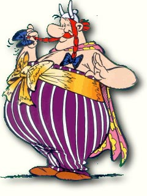

Forums galactiques > Taverne galactique : lieu de discussion informel > Au coffee shop des jours heureux
Pages : 1 2 ... 28 29 30 ... 41 42
| Yoh Réputation à la taverne : 390  02/04 ETU 22:21 | Score : 2 Détails *retenant Nezhal par la manche*
Et moi,j'suis sensé jouer avec mes propres fonds?! | ||
| Nezhal Réputation à la taverne : 923  02/04 ETU 22:24 | Score : 2 Détails Un immense sourire aux lèvres, Nezhal se retourna.
Ils en ont largement assez pour tout le monde, partagez avant de commencer ! | ||
| Yoh Réputation à la taverne : 390 02/04 ETU 22:30 | Score : 3 Détails Okay...
Yoh s'empare d'une bombe de teinture pour cheveux, d'un pot de gel et d'un peigne sortis de ses poches intérieures, et change de coupe en l'espace de quelques secondes, rangeant instantanément son attirail capillaire une fois la modification accomplie. Une coupe en pétard,teintée ci et là de mèches rouges orangées hérissées sur son crâne. Il redresse le col de sa veste,avant de poser sur son nez une paire de lunettes de soleil noires... http://www.radioblogclub.com/open/118960/reveille_le_punk/Svinkels%20-%20Reveille%20Le%20Punk Un sourire satisfait au coin des lèvres,il ramasse les cartes posées devant lui. | ||
| Mr Muffle Réputation à la taverne : 188  03/04 ETU 12:04 | Score : 7 Détails Mr Muffle entra d'un pas (relativement) rapide en se dirigeant vers le comptoir. Et là, ni une ni deux, il déposa une immonde galette sur celui-ci. Il avait toujours rêvé de (re)faire ça, comme ç'avait été longtemps la coutume de par le passé...
"S'cusez moi les man, ça me réussit pas les aqua-CLA... Hey Roots nigga dread, ça biche ? Pas eu beaucoup de temps ces temps-ci, des morceaux de mon empaya à recoller ! A bah tiens, le Hellfire, ça tombe bien ! Bon alors MunSu, on se la fume cette herbe de Khîme ?! Ma foi, ç'avait bien l'air d'être la chouille par ici. Même le Larry machin radin ringard et dépassé venait profiter de l'ambiance pour le moins euh... gazeuse. Un picolo-poker ? Jah ! Yo les man, ça vous dit on fait un immonde caps ? Roots, bientôt les vacances du Pâck, tu doit bien avoir des munitions en stock ! Et pis appelle les gros qui manquent. Et ramène un bol pour Edgar... Sur ce, il s'assit en tailleur, commençant naturellement, comme le voulait aussi la coutume, par un cul sec de binouze chaude. C'est quoi les équipes ?!" ouvert à tous | ||
| Corum Réputation à la taverne : 1323  03/04 ETU 17:58 | Score : 7 Détails Soudain les deux battants qui servaient de porte au bar s'entrouvirent brutalement..Une large silhouette obscurcit de son ombre imposante l'encadrure, les jambes écartées et les poings sur les hanches..Le silence se fit tandis que le temps parut quelques secondes suspendre son vol..
Dans le fond de la pièce un homme se mit à jouer un air d'harmonica.. Un frisson glacial parcouru l'échine de quelques-uns des commandants présents.. Quelques murmures par-ci par-là.. "Oh non pas elle..comment a-t-elle pu être au courant aussi rapidement.." "Si elle participe ça va être un carnage..ça va saigner, je veux pas voir ça.." Une femme Une respectable hein pas une trainée qui se fait poutrer la rondelle..prit son bébé et le serra contre sa poitrine, elle se tourna vers deux enfants qui tentaient maladroitement de se cacher dans ses jupons.. "Rentrez vite à la maison mes petits, vite, et surtout ne vous retournez pas !!" Quelques jeunes commandants détalèrent, ayant sans doute entendu parler des précédentes apparitions de l'ombre menaçante. La compétition allait être rude.. Un indien accoudé au bar se tourna vers l'ombre et lui dit : "Chuis content, que tu sois venue..On va pouvoir manger des chip..." Il ne put finir sa phrase..il s'écroula de tout son long, la tête dans le crachoir, une capsule "envidken" incrustée dans la glotte.. ouaaahhh, quelle précision et quelle rapidité de mouvement !! La nouvelle venue s'avança enfin, entrant dans le cercle de lumière et quittant par là-même sa posture ridicule.. Tout le monde reconnu l'Existante Melpomène, affublée de sa légendaire topette sur le côté droit de son cul énorme et, pendant sur sa volumineuse poitrine, un collier de capsules d'astro-binouzese provenant de toute la galaxie.. "Alors mes petites couilles en fleurs..On organise une compèt' de Caps et pense pas à m'inviter ??" | ||
| Bephera Réputation à la taverne : 174  03/04 ETU 18:02 | Score : 4 Détails Bephera se retourna et aperçut Mr muffle assit au sol...
Hummmm un méchant caps...Prems perse! "Je propose que nous fassions équipe mon cher et tendre Muffle...Cela fait si longtemps...Vous m'avez manqué!" Elle s'enfila Remettons les choses à leur place...Pour les espris tordu : Elle but sa bière d'un coup d'un seul et se posa à côté de son cher et tendre "Bon et bien en attendant les gros, on se fume quelque chose non?!" | ||
| Mr Muffle Réputation à la taverne : 188 03/04 ETU 18:48 | Score : 6 Détails Mr Muffle se pencha sur le corps de l'indien (d'ailleurs, qu'est-ce qu'il foutait là, lui, au milieu de l'orage de débauche qui se préparait ?!) pour ramasser la caps du nouvel adversaire, et puis le calumet du Peau-rouge, tant qu'à faire, ça pouvait toujours servir...
"Oula, il va y avoir du niveau, comme dirait l'autre... Bon je rappelle vite fait les règles, mais je crois que tout le monde ici les connait ! - Caps qui tombe, on contre-capse, ou on se couche ! - "Bûcheron", (caps qui tombe lorsque le projectile ne touche que la bouteille, bref, un truc assez sâle en somme !) c'est cul-sec, à moins d'un "contre-bûcheron mais là c'est vraiment de la moule... - Rebond (caps qui tombe après le rebond du projectile) cul sec, à moins, pareil, d'un improbable "contre-rebond"... - Bon je parle brièvement de l'utopique "rebond-bûcheron", mais là c'est vraiment pour les hardcore gamers (et je sais qu'il y en a ici !) Allez, venez vite, Insurgés, Hellfireux, escargots, morts-vivants, Bisounours, Dieux, Jafnhars, qui que vous soyez, venez prendre des munitions dans la cuvette ! Ah non, pas toi Obelix, tu es tombé dans la marmite étant petit..." | ||
| Obelix Réputation à la taverne : 0  03/04 ETU 18:59 | Score : -3 Détails Mais euh ! Je veux boire de la potion magique!
Arrête de me dire sa ,tu fais comme astérix ,allait un peu de potion stp euh... Ouin par bélonos ,sois foudroyé ! Sont fous c'est exilés Idéfix attaque !!! Un éclair tomba et tua Obélix ,sacré belonos. | ||
| Corum Réputation à la taverne : 1323 04/04 ETU 16:21 | Score : 6 Détails Melpomène regarda le gros gaulois s'effondrer faisant au passage vibrer l'ensemble du batiment et se renverser quelques verres sur les tables..
Le petit chien blanc se mit à hurler à la mort comme si une allée de séquoïas venait d'être soufflée par une tempête.. "Viens là le caniche et arrête de couinner comme ça sinon tu vas pas faire long feu dans ce repaire de pirates.." Le chien s'approcha peureusement et aprés une courte hésitation, il sauta sur les genoux de la philosophe et se mit à lui lécher la gueule.. "Olahh doucement l'clébard je me suis déjà lavé le cul ce matin alors évites les effusions de salive..Oh mais c'est qu'il est mignon tout plein ce p'tit hamster..Je vais t'appeler "astropastix" tiens..Tu seras le gardien de la sainte topette de gnôle.." Elle se mit à caresser la boule de poils qui se coucha tel un sphynx d'ivoire sur les genoux de la vieille femme "Bon alors moi j'adhère à toute vos règles mr Muffle.. bucherons, rebonds, contre-attaque,effet retro-coulé, et triple loots piqué..Juste une question il peut y avoir riposte à une riposte jusqu'à ce que cul sec s'en suive ou quoi ? De toute façon vu la taille de vos godets le plus difficile va être de ne pas les boire cul sec..D'ailleurs c'est quand la bouteille fait plus d'un litre que je m'arrête pour reprendre mon souffle..voire pour roter un peu de mousse.. En fait vos binouzes sont tellement petites que ça doit même être difficile de pas avaler la bouteille avec.." Elle se tourna vers le bar "Eh tenancier ??!! Roooots ??!! T'as pas des chopines taille baron ou peachers qu'on arrête de faire semblant ??J'ai une moquette saint macloud sur la langue à force de déblatérer des conneries" | ||
| Roots Boy Réputation à la taverne : 923  04/04 ETU 21:00 | Score : 7 Détails "J'aime bien ton style Melpo......Mais pourquoi tu dis tant de gros mots?
Vous voulez du verre de chez verre? Je n'y voyais pas comme ça. Ecoutez plutôt chers joueurs du caps. Chacun un packs de 20 amsterdam à 8,6°. Bien évidemment la cannette en trois tiers, et bien évidemment on a le droit de contre capser jusqu'à ce que mort s'en suive. Le port de casque et de protections est vivement conseillé.... Pour ce qui est du contre rebond je tiens à dire que je suis rentré dans les anales du caps en le rentrant la dernière fois. On peut dire que j'avais le respect dans la salle...(hey oui je suis un chaud ;) ) Voilà je laisse encore un peu de temps pour que les derniers joueurs qui veulent participer viennent s'inscrir. En attendant je mets un petit fond sonnor pour fumer mon pétard... Roots Boy se dirigea vers le old judebox et tapota sur les touches.... http://www.radioblogclub.com/open/124149/max_romeo/max%20romeo%20-%20Blood%20of%20the%20Prophets%20Parts%201%202 Voila mes amis, la partie va bientot pouvoir commencer!" | ||
| Meyen Réputation à la taverne : 515  04/04 ETU 23:07  | Score : 1 Détails Meyen arriva dans le coffee un peu pressé..
Excusez-moi de vous déranger Messieurs; je n'en ai pas pour longtemps. Mon ptit Roots j'aurai juste besoin d'une cinquantaine de bouteilles de votre meilleur Rhum ! C'est pour emporter dans ma planète Alpha-Gamma, je sens que j'en aurai besoin encore longtemps... | ||
| Mistermore Réputation à la taverne : 550  04/04 ETU 23:25 | Score : 3 Détails "L'homme avait fini son dur labeur de la journée, il ne pensait plus qu'a une seule chose. Mistermore semblait lobotomisé par grippe du boeuf qu'il avait attrapé au contact de Mr Muffle"
AH !!! Roots Boy tu peux me servir un coktail spécial (double zéro + progresskunk : de la boulette!) et un petit Astropastaga, la journée a été dure. "Mistermore sortit de sa poche gauche son rouleau de feuille préféré en poil de Wookie (c'est pour le gout. Y a un p'tit fumé, excellent), s'assis tranquille sur un des sofas du Roots garden et se détendit le temps que BOSS est préparé la mixture." Et Roots boy j'ai lu à l'entrée que t'organisé un concours de caps. S'il reste de la place je suis partant. Dans le temps j'étais pas maladroit,... | ||
| Corum Réputation à la taverne : 1323 05/04 ETU 17:32 | Score : 2 Détails melpomène baissa les yeux à la remarque de rootboy..
Pardon beau gosse, je savais pas que "cul-sec" était une insulte dans ton bouge, je te promets de faire attention à l'avenir.. Et en même temps j'ai appelé personne "buveur d'eau" alors faut pas exagéré non plus !! Je suis une dame honorable hein..alors le premier qui m'emmer...de oui alors le premier qui m'ennuie et bien..heu..je lui paye un coup pour qu'il se détende^^ Elle avalait le contenu de sa binouze cul-se..heu d'une traite !! | ||
| Estelle Réputation à la taverne : 109  05/04 ETU 21:44 | Score : 3 Détails §Estelle avait entendu à travers la galaxie parler de la boutique Herboriste que tenait son gentil protecteur.§
A l'interieur il y avait Roots et Mistermore : Bonsoir messieurs, je voulais m'excuser de ce qui est arrivé. C'est de ma faute! J'ai appellé à l'aide et vous avez tous les deux répondus. Je sais que je n'aurai pas du faire appelle à vous deux mais Lafy Nayu et moi avions peur que nos peuples soient sauvagement exterminés. Merçi beaucoup. §Estelle partie après avoir fait un gros baiser aux deux commandants, ell était trop honteuse pour reste boire une tisanne§ (mais je reviendrais) | ||
| Bephera Réputation à la taverne : 174 07/04 ETU 22:24 | Score : 1 Détails Bephera entra dans le coffee. Elle avait le teint pâle, de petits yeux rouges...Elle n'avait pas l'air d'être dans son assiette.Elle entra et se dirigea directement vers Roots:
"Roots, tu pourrais me préparer une petite tisane de ta meilleur récolte? J'ai du mal à me remettre de ma soirée d'hier...dit elle en rougissant" Roots lui donna sa tisane puis elle partit se caller au fond d'un fauteuil.Elle sortit de sa poche un petit sachet et se roula un pète. En espérant que tout cela me remette le bide en place...ou pas. Mais que fout mon mari? Ilva m'entendre celui la! | ||
| Mr Muffle Réputation à la taverne : 188 09/04 ETU 02:27 | Score : 3 Détails Pouaaaaaaaaah, Mr Muffle était encore bien saoul ! On eut dit qu'il essayait de manger sa queue (eeeeh Ketze !) au vu des convulsions qui agitaient cet agité du bulbe...
"Dites lui de partir, il m'oppresse ! Ecrasez-moi ce iule, il va me monter le long de la jambe et me rentrer par le nombril, je vous dis, il va me pondre des milliers d'oeufs de iule et je vais mourir mangé par une horde de iules en furie en quête de pouvoir... Dis leur de mettre leurs putains de chaussures de golf ! Béphé, rejoins moi vite dans le canap', faut qu'on organise la contre-attaque ! File-moi ma carabine, qu'on défonce ces enflures démoniaques..." | ||
| Bephera Réputation à la taverne : 174 09/04 ETU 02:42 | Score : 1 Détails Bephera regardait son mari d'un aire dubitatif...
Est ce que je dois lui parler des chauve-souris?...Il les verra bien assez tôt! "Ne t'inquiète pas je suis là à tes côtés...prends ça dit elle en lui tendant son pète ça va te détendre un peu..." Elle se commanda un shooter de vodka et en proposant un à son conjoint.Celui-la accepta et Roots leur apporta les petits verres remplis du liquide si précieux... "A la tienne!!!" Et ils se firent leur verre cul sec principe du shooter soit dit en passant | ||
| Mistermore Réputation à la taverne : 550 16/04 ETU 18:39 | Score : 3 Détails "Comme à son habitude Mistermore alla tranquillement fêter la vente réalisée par son commerçant Ulysse"
Salut Oh toi grand rastaman galactique! Aujourd'hui c'étit une belle journée. Ulysse mon commerçant à fait du beau boulot. Il a vendu une cinquantaine de planètes au commandant Vlavv et il a fait une belle marge! Alors pour fêter celà je vais prendre l'habituel Astropastis, c'est fois le noye pas! Et puis un p'tit trois feuilles corde, histoire de continuer à planer. Merçi BOSS, je vais me caler dans un des canapés le temps que les autres arrivent.... | ||
| Bioman Réputation à la taverne : 205  17/04 ETU 01:52 | Score : 3 Détails Et une tournée pour toute mon équipe de Biomans s'il vous plait !!
On a une victoire à fêter... : La prise de l'Arche et donc du Zéro ! | ||
| Roots Boy Réputation à la taverne : 923 17/04 ETU 09:42 | Score : 4 Détails Visiblement Bioman et ses potes planaient un peu trop, il fallait agir...
|
Pages : 1 2 ... 28 29 30 ... 41 42
Forums galactiques > Taverne galactique : lieu de discussion informel > Au coffee shop des jours heureux